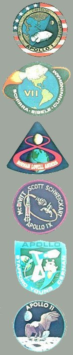
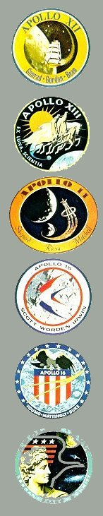

| 
 | 1958 | July | National Aeronautics and Space Act signed into law establishing NASA. |
| October | Mercury program begun; six successful manned flights would occur. | ||
| November | Space Task Group officially organized, at Langley Field, Va., to implement the manned satellite project, known later as Project Mercury. | ||
| 1959 | April | First group of astronauts is selected for manned spaceflight program. | |
| December | Saturn configuration and development program are approved. | ||
| 1960 | February | Ranger project for lunar hard landings is formally authorized. | |
| May | Lunar soft-landing program, later renamed Surveyor, commences. | ||
| July | Apollo approved as name of advanced manned spaceflight program. | ||
| 1961 | May | First U.S. suborbital manned spaceflight, by Astronaut Alan B. Shepard, Jr., in a Redstone rocket-boosted Mercury capsule named Freedom 7. | |
| May | President Kennedy proposes broad, accelerated space program, including manned lunar landing within the decade, in a special message to the Congress. | ||
| August | Cape Canaveral selected as the launch site for manned lunar fights. | ||
| November | The Space Task Group redesignated as the Manned Spacecraft Center. | ||
| 1962 | February | First U.S. orbital manned spaceflight by Astronaut John H. Glenn, Jr., in an Atlas-boosted Mercury capsule named Friendship 7. | |
| July | Selection of lunar orbit rendezvous flight mode for Apollo missions. | ||
| 1963 | May | First U.S. long duration spaceflight, by Astronaut L. Gordon Cooper, Jr., aboard an Atlas-boosted Mercury, Faith 7; last flight in the Mercury program. | |
| August | Lunar orbiter program, to team with Ranger and Surveyor, approved. | ||
| 1964 | May | First flight of an Apollo-configured spacecraft with a Saturn vehicle (two-stage Saturn I), launched from Cape Kennedy; craft, upper stage orbited. | |
| July | Closeup television pictures of lunar surface are sent by Ranger VII. | ||
| 1965 | March | First U.S. two-man orbital spaceflight, by Astronauts Virgil I. Grissom and John W. Young in Titan II-boosted Gemini III. | |
| June | First U.S. extravehicular activity, Astronaut Edward H. White II maneuvering from Gemini IV piloted by Astronaut James A. McDivitt. | ||
| December | First Piloted rendezvous in space, by Astronauts Schirra and Stafford in Gemini VI with Gemini VII, Astronauts Borman and Lovell aboard. | ||
| 1966 | February | First launch of the Saturn IB (two stage) with an Apollo spacecraft. | |
| March | First docking in space, made by Astronauts Neil A. Armstrong and David R. Scott aboord a Titan-boosted Gemini VIII. | ||
| June | Successful on first attempt, Surveyor I softlands on the lunar surface and reports back on soil bearing strength and surface temperatures. | ||
| August | First U.S. spacecraft to orbit the Moon, Lunar Orbiter I sends back Surveyor and Apollo landing site photos. | ||
| 1967 | January | Flash fire kills Apollo 1 Astronauts Grissom, White, and Chaffee in command module atop a Saturn I booster at Launch Complex 34. | |
| November | First flight of the Saturn V is a success; Apollo 4 placed in orbit. | ||
| 1968 | January | First flight test of the lunar module, in Earth orbit, in Apollo 5. | |
| October | First manned Apollo flight, by Astronauts Schirra, Eisele, and Cunningham, in the Saturn IB-boosted Apollo 7. | ||
| December | Astronauts Borman, Lovell, and Anders become first men to orbit the Moon, in the Saturn V-boosted CSM of Apollo 8. | ||
| 1969 | March | First manned flight of the lunar module, in Earth orbit, by Astronauts McDivitt and Schweickart with Astronaut Scott piloting CSM, in Apollo 9. | |
| May | First lunar module orbit of the Moon, by Astronauts Stafford and Cernan with Astronaut Young manning the orbiting command module, in Apollo 10. | ||
| July | Astronauts Armstrong and Aldrin become first men to land on the Moon; Astronaut Collins pilots the command module orbiting the Moon, in Apollo 11. | ||
| November | Astronauts Conrad and Bean walk on the Moon, while Astronaut Gordon pilots command module, in Apollo 12. | ||
| 1970 | April | Ruptured oxygen tank aborts Apollo 13 mission. Astronauts Lovell, Swigert, and Haise return safely to Earth. | |
| 1971 | January | Third successful manned lunar landing, Apollo 14, places Astronauts Shepard and Mitchell on Moon, while Astronaut Roosa pilots CSM. | |
| July | Lunar Roving Vehicle used for first time on Moon, by Astronauts Scott and Irwin, while Astronaut Worden pilots the command module, in Apollo 15. | ||
| 1972 | April | Fifth successful lunar landing mission places Astronauts Young and Duke on Moon, while Astronaut Mattingly pilots command module, in Apollo 16. | |
| December | Apollo program's longest mission, Apollo 17. Astronauts Cernan and Schmitt land on the Moon while Astronaut Evans pilots CSM. |